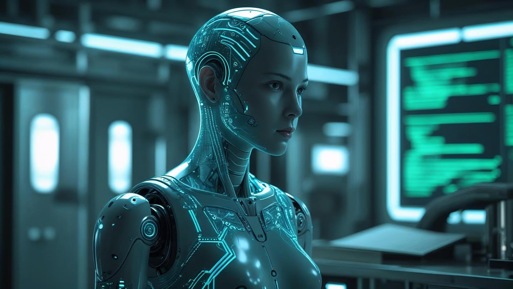

O Futuro Chegou: Previsões para a Evolução da Tecnologia até 2035
Por Giovanni Oliveira, TecScope
A tecnologia está evoluindo de forma mais rápida do que nunca. O que antes era considerado ficção científica já faz parte do nosso cotidiano: inteligência artificial generativa, veículos autônomos, realidade aumentada e internet das coisas. Mas o que nos espera nos próximos 10 anos? Quais inovações vão transformar radicalmente a forma como vivemos, trabalhamos e nos relacionamos?

Segundo relatórios de centros de pesquisa como o MIT Technology Review, a McKinsey Global Institute e o Fórum Econômico Mundial, o período entre 2025 e 2035 promete ser decisivo na consolidação de uma era profundamente tecnológica, com impactos em todos os setores da sociedade.
A mobilidade urbana também será redefinida. Carros autônomos e elétricos já estão em fase de testes avançados e, até 2035, devem ser amplamente utilizados nas grandes cidades. Drones para entregas e até táxis voadores fazem parte dos planos de desenvolvimento de infraestrutura inteligente, que inclui ruas conectadas, semáforos automatizados e rotas otimizadas por inteligência artificial.
Por fim, o conceito de identidade digital segura e descentralizada deve ganhar força, com uso de blockchain e biometria avançada. Em um mundo cada vez mais conectado, a proteção de dados pessoais será uma prioridade global.